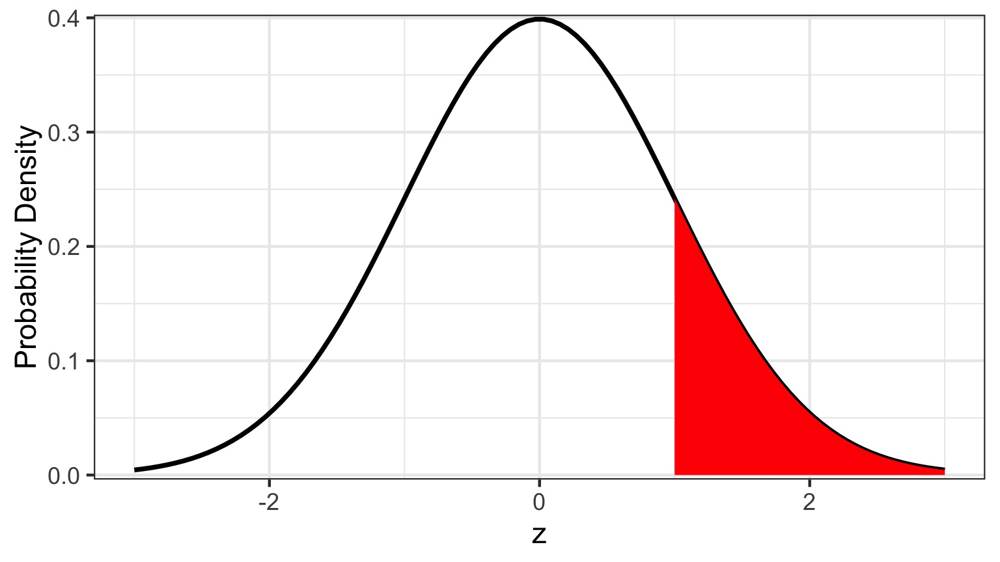
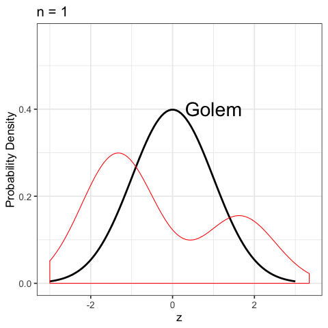
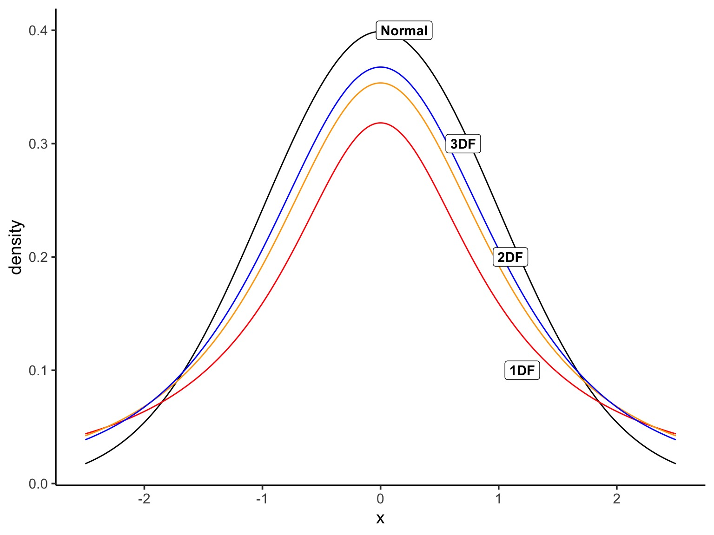
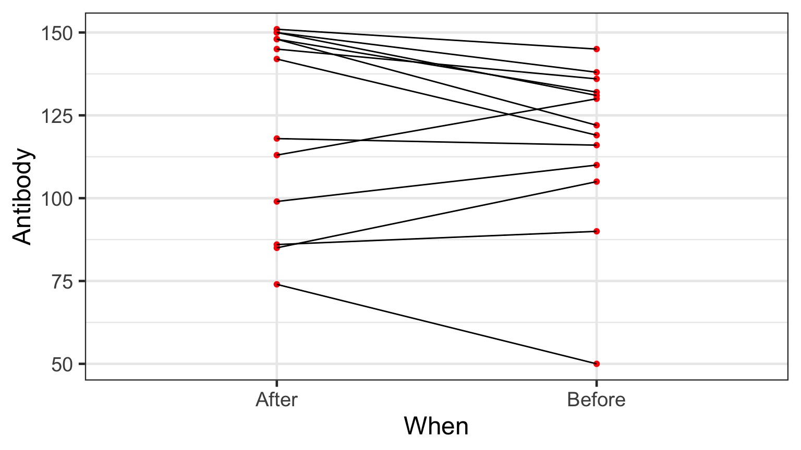
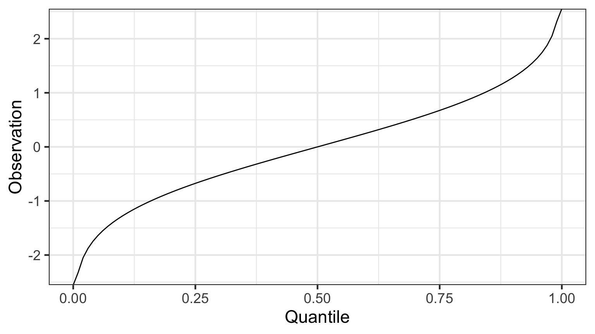
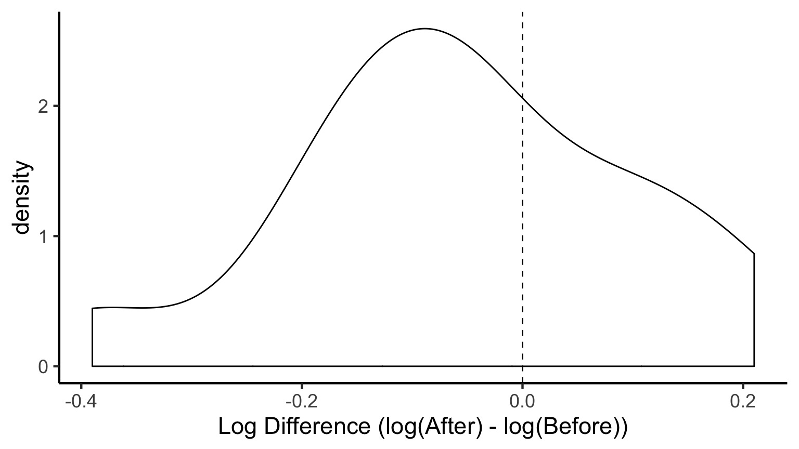
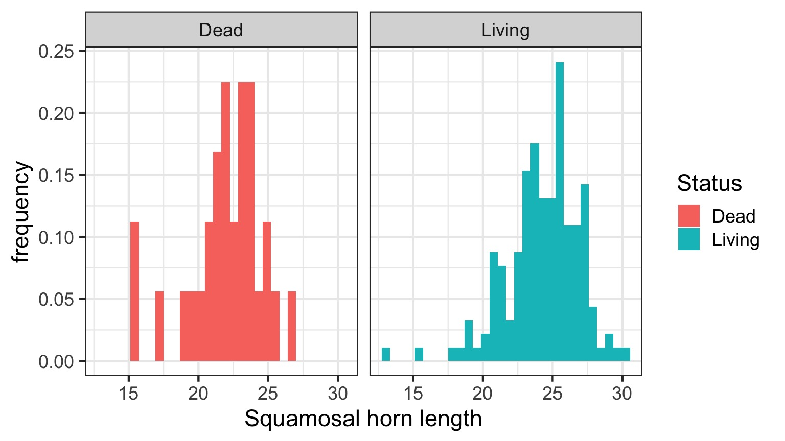
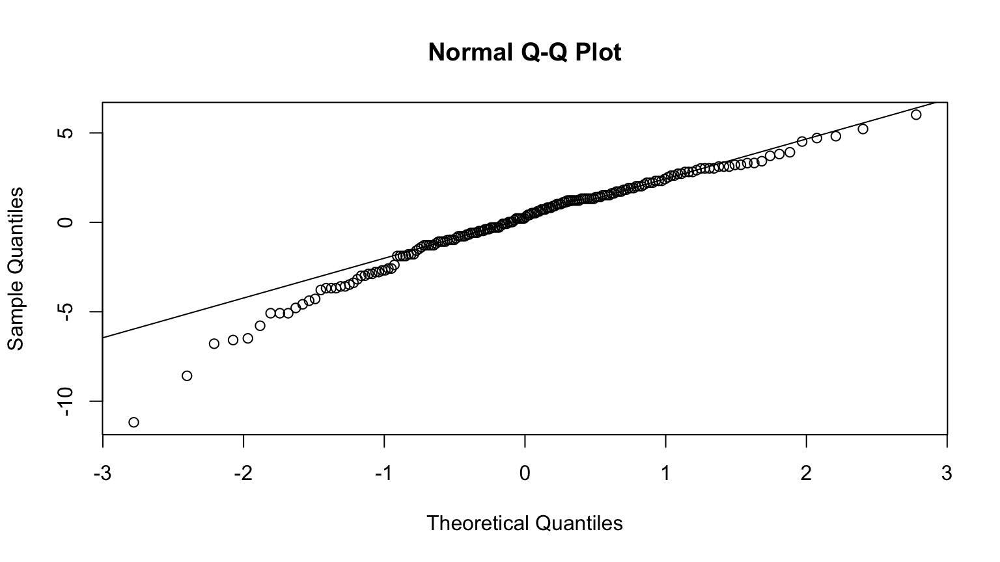
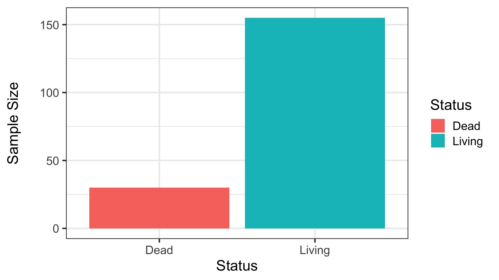
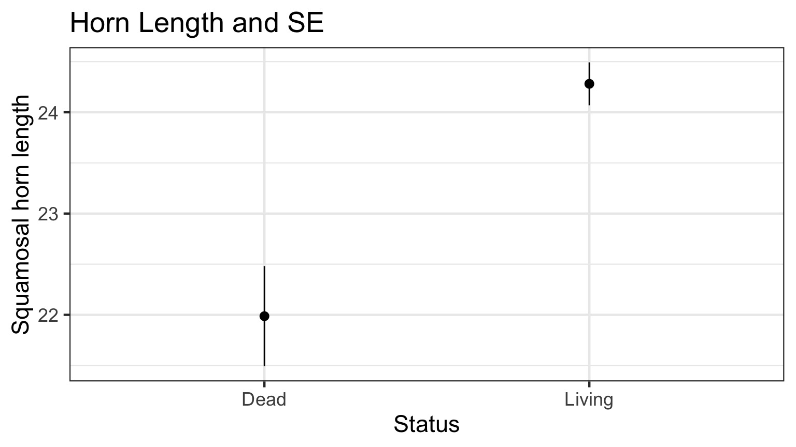

Quiz!
http://bit.ly/t-test-pre-2018
https://etherpad.wikimedia.org/p/607-t_tests-2018
Outline
- Statistical Golems, Z, and T
- T-tests in context: Paired data
- Comparing Means with a t-test
Statistical Golems

The Z-Test
- Let’s assume I have a BOX of 15 Corgis. I suspect fraud.
- I get the average chest hair length of each Corgi - but are they different?
- So, we’re interested in the difference between my sample mean and the population mean: \(\bar{X} - \mu\)
\[\Large H_o: \bar{X} - \mu = 0\]
Our Philosophy
- What is your question?
- Conceive of a model of your system
- How much do you need to know to answer your question?
- What data do you need to parameterize your model of the world?
- Do you need an experiment?
- What breadth of observations do you need?
- Do you need an experiment?
- Fit your model of the world
- Make sure you don’t burn down Prague
- Make sure you don’t burn down Prague
- Query your model to answer your question
When & How to use Z-Test: Our Model of the World
1. I have a known population mean (\(\mu\)) and standard deviation (\(\sigma\))
2. I can calculate a population SE of any estimate of the mean, \(\frac{\sigma}{\sqrt{n}}\)
3. Now calculate a test statistic
\[\Large z = \frac{\bar{X} - \mu}{\sigma/\sqrt{n}}\]
This is a Golem
\[\LARGE z = \frac{\bar{X} - \mu}{\sigma/\sqrt{n}}\]

- What is my data generating process?
- What is my error generating process?
What Drives my Golem?


Is this a Good Golumn for Realistic Sample Sizes?

With your sample size, might you burn down Prague?
- Fat tails, leptokurtic, but better with higher n

A T-Distributed Golem: A New Model of the World

T Versus Normal
- A Normal Distribution is defined by a mean and a SD
- Both assume this data and error generating process
- Both assume this data and error generating process
- A T-Distribution assumes a mean of 0, a SD of 1, but changes shape based on its Degrees of Freedom
Degrees of what?
- Let’s say you estimate a mean
- Mean = (x1 + x2 + x3)/3
- If you know the mean, x1, and x2, you can calculate x3 - DF = N-1
- How much unique information is there in calculating a parameter?
- Will also hear this called # of free parameters
DF and Distribution Shape

Using our T Statistic

- To test for difference from 0, we assume \(\mu = 0\)
- But other conditions can be used to look at differences
Outline
- Statistical Golems, Z, and T
- T-tests in context: Paired data
- Comparing Means with a t-test
Does bird immunococompetence decrease after a testosterone impant?

Differences in Antibody Performance

Our Philosophy
- What is your question?
- Conceive of a model of your system
- How much do you need to know to answer your question?
- What data do you need to parameterize your model of the world?
- Do you need an experiment?
- What breadth of observations do you need?
- Do you need an experiment?
- Fit your model of the world
- Make sure you didn’t burn down Prague
- Make sure you didn’t burn down Prague
- Query your model to answer your question
Comparing Paired Groups
\(H_0\): Difference = 0

- \(\bar{x_d}\) is the mean difference between paired samples
- Evaluate against T Distribution with n-1 Degrees of Freedom
- n = # of pairs
What’s The Difference?
Does this look normal?
Evaluating Your Golem: Assumptions to Keep Prague Fire-Free
- Before we look at p-values and all that, we need to test assumptions
- What assumptions does a t-test make?
- Ask, what is the data generating process? Does our data satisfy it?
- Ask, what is the error generating process? Is it valid?
- Single mean, normal error
Assessing Normality
- There are many ways…
- Our visual inspection could be sufficient
- Visual inspection of QQ plots
- Formal tests (e.g., Shapiro Wilks)
- Can be too sensitive, type I error
The QQ Plot
What does this mean?
Quantiles of a Normal Distribution
We’re familiar with quantiles - let’s say you have a normally distributed random variable:
0% 25% 50% 75% 100%
-3.78067252 -0.67818866 -0.01041209 0.67146298 3.61989650 There are many quantiles - all numbers between between 0% and 100%
0% 10% 20% 30% 40% 50%
-3.78067252 -1.26370725 -0.84012734 -0.53748706 -0.26382446 -0.01041209
60% 70% 80% 90% 100%
0.25880431 0.52504744 0.83012841 1.28781239 3.61989650 We Can Event Plot the Quantiles of a Normal Distribution

N.B. Quantiles are the 1-tailed P-Value!
Our data has Quantiles
0% 8.333333% 16.66667% 25% 33.33333% 41.66667% 50%
-26 -24 -23 -19 -16 -12 -9
58.33333% 66.66667% 75% 83.33333% 91.66667% 100%
-6 -2 4 11 17 20
A Normal QQ Plot shows these values plotted against the corresponding quantiles of a Normal Distribtion
The QQ Plot
If these values were normally distibuted, there would be a linear relationship, as the pattern of quantiles would be the same.
Our Golem Is Angry: What to Do about Assumption Violations
- Choose a different Golem
- Choose a different distribution
- Non-parametric tests (lower power)
- Apply a tranformation to the data to meet assumptions
Difference on a Log Scale

# A tibble: 1 x 6
estimate statistic p.value parameter method alternative
<dbl> <dbl> <dbl> <dbl> <chr> <chr>
1 -0.0562 -1.27 0.228 12 One Sample t-test two.sided General Testing Workflow
- Build a Test
- Evaluate Assumptions of Test
- Evaluate Results
- Visualize Results
Outline
- Statistical Golems, Z, and T
- T-tests in context: Paired data
- Comparing Means with a t-test
Horned Lizard Survivorship

Horns prevent these lizards from being eaten by birds. Are horn lengths different between living and dead lizards?
The Data
What is the data generating process?
Data Generating Process as a Model
\[Horn\: Length_{ij} = \beta_i\]
\[\beta_i = Horn\: Length\, for\, group\: i\]
Error Generating Process in the Model
\[Horn\: Length_{ij} = \beta_i + \epsilon_j\]
\[\beta_i = Horn\: Length\: for\, group\: i\]
\[\epsilon \sim N(0,\sigma)\]
The Unpaired T-Test
\[\LARGE t = \frac{\bar{x_1} - \bar{x_2}}{s_{12}\sqrt{2/n}}\]
s12 is a pooled standard deviation:
\[\large s_{12} = \sqrt{(s_1^2 + s_2^2)/2}\]
Evaluating Error Generating Process

Evaluating Residuals for Normality

Unequal Sample Size?

There’s a formula for that!
Keeping Your T-Test from Burning Down Prague
Unequal Sample Sizes - Alternate Formula for Denominator
Unequal Population Variances - Welch’s T-Test (different denominator and DF)
Residuals Not Normal - Transform - Non-Parametric Test - Golem with a different error structure
OK, Query Your Golem and Evaluate the Results!
| estimate | estimate1 | estimate2 | statistic | p.value | parameter | conf.low | conf.high | method | alternative |
|---|---|---|---|---|---|---|---|---|---|
| -2.295 | 21.987 | 24.281 | -4.263 | 0 | 40.372 | -3.382 | -1.207 | Welch Two Sample t-test | two.sided |
Visualization

What is being shown here?
T-tests
| Test | Purpose | Assumptions |
|---|---|---|
| 1 sample t-test | Tests whether the mean of a sample is equal to a target value | Normality of population |
| 2 sample t-test | Tests whether the the means of two independent samples are equal | Normality, Equal Variance, Equal Sample Size |
| Paired t-test | Tests whether the mean of the differences between paired observations are equal | Normality of difference |
Wrap-Up
- Even if the world is normal, your sample isn’t
- Statistical models are just that - you have to build them
- Guiness has given us many ways to handle testing one or two means